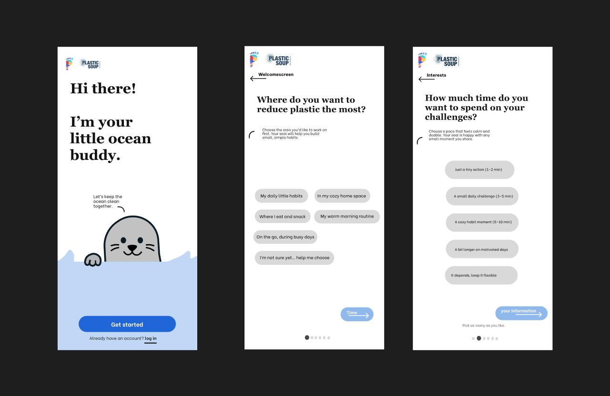
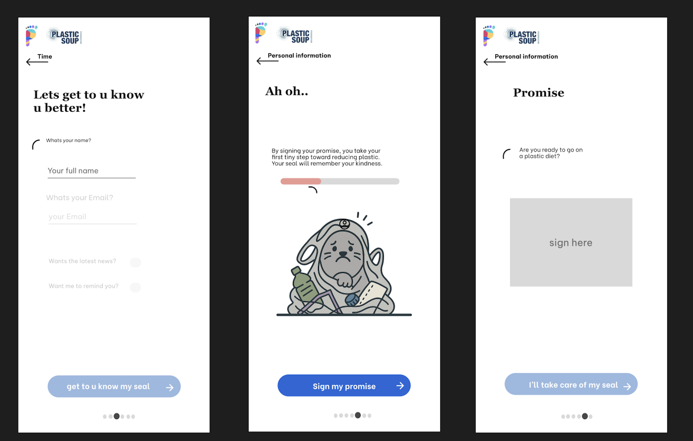
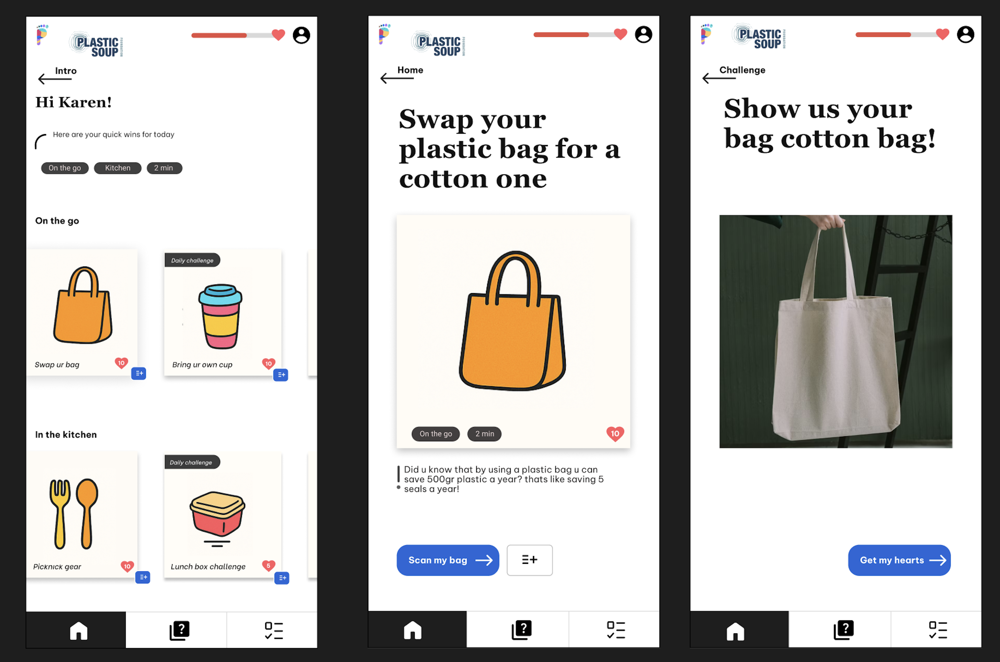
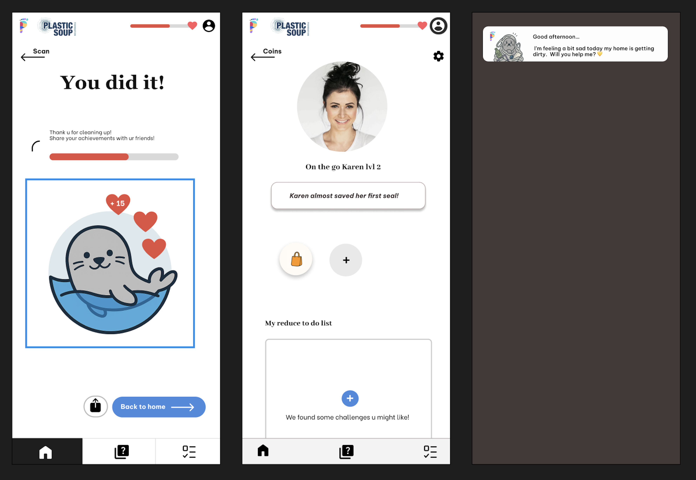

Plastic Soup App
I designed an engaging app centered around small, actionable steps that create sustainable behavior. Guided by a friendly ocean buddy (a cute seal!), users are encouraged to reduce plastic waste and make eco-friendly choices in a fun and rewarding way.
About the Assignment
The core concept of this project is turning sustainability into achievable daily habits. Instead of feeling overwhelmed by big global problems, the app breaks down eco-friendly behavior into small, fun actions—like swapping a plastic bag for a cotton one, completing quizzes, and tracking your positive impact on the ocean.
Problem Statement
Many people want to live more sustainably, but they often don't know where to start or feel like their individual actions don't matter. To solve this, I designed an onboarding and tracking system featuring a personal "ocean buddy" that guides users, offers bite-sized challenges, and rewards every sustainable choice they make to keep them motivated.
My Role
- UI Design
- Concept Development
- Interface Design
- UX Design
- Functional Design
- Brand Identity
- Gamification
- Target Audience Focus
- User Experience
- Behavioral Design
- Brainstorming
Branding & Character Design
The brand identity is warm, friendly, and approachable. By introducing a cute, empathetic seal as the user's personal companion, sustainability feels less clinical and much more personal. The playful use of illustrations, badges, and progress trackers transforms eco-friendly habits into a rewarding, interactive journey.
Scroll Through the One-Pager
Check out the prototype and design flow on Figma.
View on FigmaProject Images



